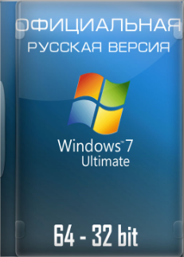
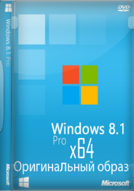
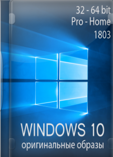

Список товаров:
Операционные системы
|  |
Операционная система семейства Windows NT компании Microsoft, предназначенная для работы на компьютерах с 32-битными и 64-битными процессорами, следует по времени выхода за Windows Vista и предшественник Windows 8. |
32-разрядный (x86) или 64-разрядный (x64) процессор с тактовой частотой 1 ГГц или выше. 1 ГБ (для 32-разрядного процессора) или 2 ГБ (для 64-разрядного процессора) ОЗУ. 16 ГБ (для 32-разрядной системы) или 20 ГБ (для 64-разрядной системы) свободного места на жестком диске. Графическое устройство DirectX 9 с драйвером WDDM 1.0 или более поздней версии. |
|---|---|---|
|  |
Операционная система, принадлежащая семейству Windows NT, в линейке следующая после Windows 7 и перед Windows 8.1. Разработана корпорацией Microsoft. Версия ядра - 6.2. Поступила в продажу 26 октября 2012 года |
Процессор. 1 ГГц* или выше с поддержкой PAE, NX и SSE2 (подробнее) ОЗУ. 1 ГБ (для 32-разрядной системы) или 2 ГБ (для 64-разрядной системы) Место на жестком диске. 16 ГБ (для 32-разрядной системы) или 20 ГБ (для 64-разрядной системы) Видеоадаптер. Microsoft DirectX 9 с драйвером WDDM |
|  |
Операционная система для персональных компьютеров и рабочих станций, разработанная корпорацией Microsoft в рамках семейства Windows NT. После Windows 8.1 система получила номер 10, минуя 9. Серверный аналог Windows 10 - Windows Server 2016 |
Процессор Как минимум 1 ГГц или SoC. ОЗУ 1 ГБ (для 32-разрядных систем) или 2 ГБ (для 64-разрядных систем). Место на жестком диске 16 ГБ (для 32-разрядных систем) или 20 ГБ (для 64-разрядных систем). Видеоадаптер DirectX версии не ниже 9 с драйвером WDDM 1.0. Дисплей 800 x 600. |

|
ocmashelp@gmail.com |
|---|